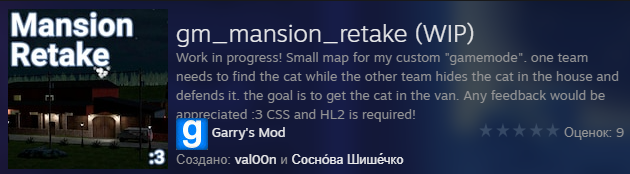

Моя карта в Garry's Mod
Год назад, в начале лета, я загорелся идеей сделать карту для GMod(и желательно довести дело до публикации в мастерской стим)
Первоначально я рассчитывал сделать её за месяц, но создание заняло куда больше времени. В разработке осталась канализация.
19 Июня была опубликована первая(крайне сырая) версия карты:
После бесчисленного множества доработок карта достигла своего финального варианта:
На карту можно подписаться по ссылке ниже:3
